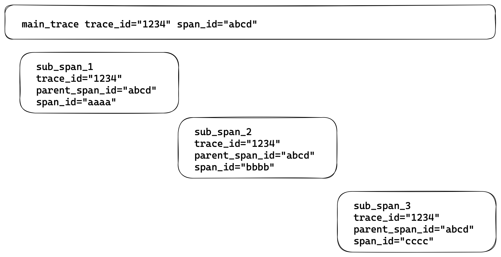
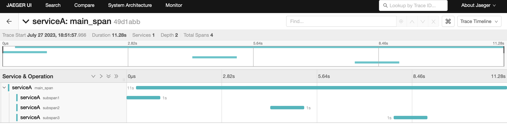

Multi Span Traces


TLDR: Prefer to read code? See the GitLab sample pipeline for a working example.
tracepusher v0.5.0 and above supports tracing any arbitrarily complex multi-span trace. It does so by allowing users to generate and pass in their own trace-id and span-id.
Consider the following batch script:
#!/bin/bash
main_time_start=0
counter=1
limit=5
while [ $counter -le $limit ]
do
echo "in a loop. interation ${counter}" # 1, 2, 3, 4, 5
done
main_time_end=$SECONDS
duration=$(( main_time_end - main_time_start ))
As a trace, this would be represented as 1 parent span (that lasts for 5 seconds). "Inside" that parent span would be 5 sub spans, each denoting "once around the loop".
In the default mode, tracepusher will auto-generate trace and span IDs but you can generate your own and pass them in. For example:
# trace_id is 32 digits
# span_id is 16
trace_id=$(openssl rand -hex 16)
span_id=$(openssl rand -hex 8)
The parent span would look like the following. Notice the --time-shift=true parameter is set. If this was not set, the timings would not make sense.
For more information, see time shifting
Parent Span Example
python3 tracepusher.py \
--endpoint http://localhost:4318 \
--service-name "serviceA" \
--span-name "main_span" \
--duration ${duration} \
--trace-id ${trace_id} \
--span-id ${span_id} \
--time-shift True
Sub Span Example
# Note: subspan time is tracked independently to "main" span time
while [ $counter -lt $limit ]
do
# Calculate unique ID for this span
sub_span_id=$(openssl rand -hex 8)
sub_span_time_start=$SECONDS
# Do real work here...
sleep 1
subspan_time_end=$SECONDS
duration=$$(( $time_end - $time_start ))
counter=$(( $counter + 1 ))
python3 tracepusher.py \
--endpoint http://localhost:4318 \
--service-name serviceA \
--span-name "subspan${counter}" \
--duration ${duration} \
--trace-id ${trace_id} \
--parent-span-id ${span_id} \
--span-id ${subspan_id} \
--time-shift True
done